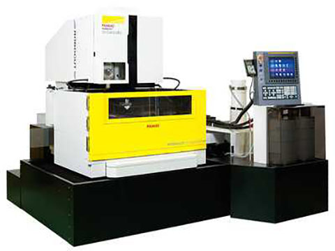
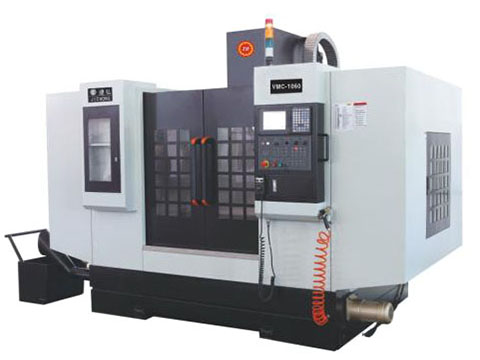

<!-- 大屏展示 -->
<!-- 状态监控 -->
<div class="whole-area">
  <!-- 机器列表 -->
  <div class="machine-list-area">
    <nz-list [nzDataSource]="equipmentInfoDataSet" [nzLoading]="isEquipmentListLoading" [nzRenderItem]="item"
      [nzGrid]="{gutter:2, xs: 24, sm: 12, md: 8, lg: 6, xl: 4, xxl: 3}">
      <ng-template #item let-item>
        <nz-list-item class='nz-list-item' [nzContent]="nzContent">
          <ng-template #nzContent>
            <!-- 设置card的内边距 -->
            <nz-card [nzBodyStyle]="{'padding':'1.0rem .1rem;'}">
              <nz-card-meta [nzTitle]="titleTemplate" [nzDescription]="descriptionTemplate"></nz-card-meta>
            </nz-card>
            <ng-template #titleTemplate>
              <!-- 颜色转换 -->
              <span class="machine-info-title"
                [style.background-color]="getBackgroundColor(item.MachineState)">{{item.MachineName}}
              </span>
              
              
            </ng-template>
            <!-- <ng-template #avatarTemplate>
              <nz-avatar nzSrc="../../../../assets/image/machine.jpg"></nz-avatar>
            </ng-template> -->

            <ng-template #descriptionTemplate>
              <!-- 在此调节高度 -->
              <div style="height:15rem;">
                <div class="display-info-text">
                  <span class='display-info-title'>模具:</span>
                  {{item.MouldId}}</div>
                <div class="display-info-text">
                  <span class='display-info-title'>程序单:</span>
                  {{item.ProgramNam}}</div>
                <div class="display-info-text">
                  <span class='display-info-title'>程序单进度:</span>
                  {{item.ProgramIndex}}</div>
                <div class="display-info-text">
                  <span class='display-info-title'>开始:</span>
                  {{item.ProgramStartTime}}</div>
                <div class="display-info-text">
                  <span class='display-info-title'>剩余:</span>
                  {{item.ProgramSurplusTime}}</div>
                <div class="display-info-text">
                  <span class='display-info-title'>耗时:</span>
                  {{item.ProgramTakenTime}}</div>
                <div class="display-info-text">
                  <span class='display-info-title'>备刀剩余:</span>
                  {{item.ProgramKnifeSurplusTime}}</div>
              </div>
            </ng-template>
          </ng-template>
        </nz-list-item>
      </ng-template>
    </nz-list>
  </div>

  <!-- 状态指示栏 -->
  <div class="state-bar-area">

    <span class="state-display ">
      <span class="machine-state alart-background-color" title='有异常警报'>报警</span>
      <span class="state-display-text">{{alertCount}}台/{{entireCount}}台</span>
    </span>

    <span class="state-display">
      <span class="machine-state standby-background-color" title="开机未运行">待机</span>
      <span class="state-display-text">{{standbyCount}}台/{{entireCount}}台</span>
    </span>

    <span class="state-display">
      <span class="machine-state powerOn-background-color" title="正常运行">运行</span>
      <span class="state-display-text">{{powerOnCount}}台/{{entireCount}}台</span>
    </span>

    <span class="state-display">
      <span class="machine-state powerOff-background-color" title="已关机">停机</span>
      <span class="state-display-text">{{powerOffCount}}台/{{entireCount}}台</span>
    </span>
  </div>
</div>
